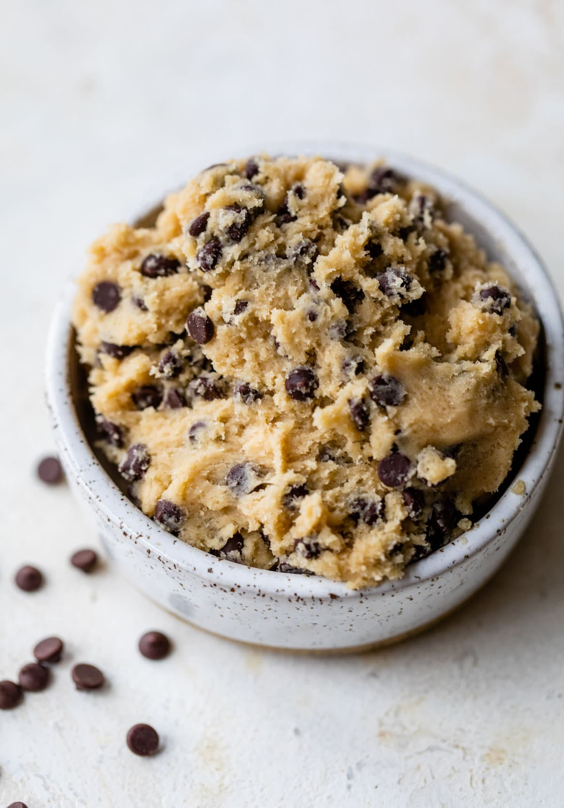

Edible cookie dough

Description
This delicious edible cookie dough is not hard to make and is very filling for a snack, it can be made in just an hour or even less. It does not need many or complex ingridients but just few and available one.
Ingredients
- Flour: Raw all-purpose flour can cause foodborne illness, so you'll have to heat-treat it before adding it to the dough. Find heat-treating instructions in Step 1 of the recipe.
- Brown sugar: Brown sugar lends a sweet, warm flavor.
- Butter
- Vanilla extract
- Salt
- Milk
- Chocolate chips
Steps
- To heat-treat your flour so it is safe to use: Place flour in a microwave-safe dish and cook for 1 minute and 15 seconds, stirring it every 15 seconds. Set aside.
- Beat sugar and butter with an electric mixer in a large bowl until creamy.
- Beat in vanilla extract and salt.
- Add heat-treated flour; mix until a crumbly dough forms.
- Stir in milk until dough is just combined; fold in milk chocolate chips and mini chocolate chips.